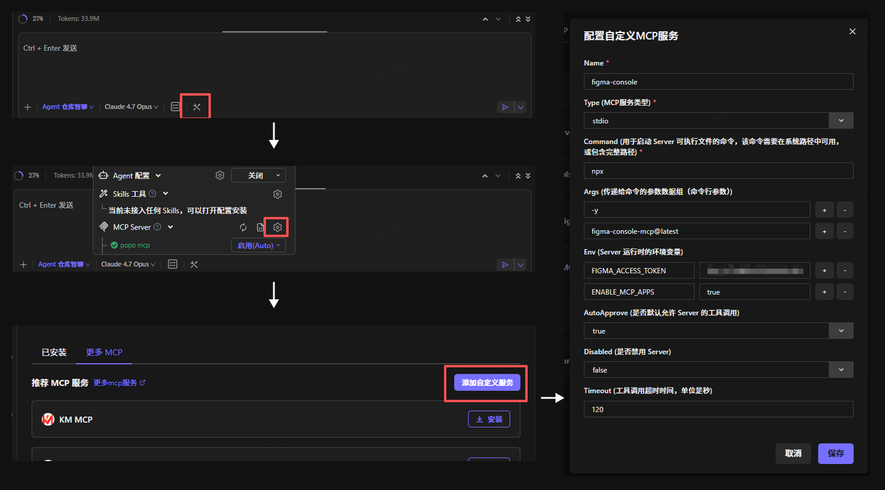

四步装好，跑通一次
这一页只有两件事：把环境装通，然后拿一份真需求走完一遍。装和跑不分家，因为实际用起来就是边装边试。
装之前确认三件事
| 需要 | 确认方法 | 不满足会怎样 |
|---|---|---|
| Node.js 20 或更高 | 命令行运行 node -v |
编译直接失败 |
| Figma 账号，能打开你要写文档的那个文件 | 浏览器登录 Figma 即可 | 引擎找不到文件 |
| CodeMaker，且能改 MCP 配置 | 设置里能看到 MCP Servers | AI 看不到引擎工具 |
Windows 上如果 node 命令找不到，用完整路径 "C:\Program Files\nodejs\node.exe"。
四步装好
-
把这个仓库装进来
引擎和 skill 都在同一个仓库里，一次装完。命令按顺序跑，最后回到仓库根目录。
git clone <仓库地址> cd game-interaction-sop cd packages/figma-mcp-server npm install npm run build cd ../.. npm run install-skill -- --agent codemakerskill 会复制到
~/.codemaker/skills/game-interaction-sop，新开一个会话才生效。想知道它会装到哪，加--dry-run再跑一次。成功标志：出现
packages/figma-mcp-server/dist/server/index.js，且 skill 安装命令打印了目标目录和文件数。 -
在 CodeMaker 里加一个 MCP 服务
打开 CodeMaker 的 MCP 配置，新建自定义服务，字段照这张表填。Args 里的路径就是上一步产出的那个文件。
字段 填什么 Name figma-interaction-doc-engineType stdioCommand nodeArgs <仓库绝对路径>/packages/figma-mcp-server/dist/server/index.jsEnv FIGMA_BACKEND=figma-consoleEnv FIGMA_ACCESS_TOKEN=<第 3 步拿到的 Token>AutoApprove trueTimeout 120配置界面长这样：

两条必须遵守只配一个 MCP 服务。以前单独配过
figma-console的，要把那条删掉，否则端口会被占住。FIGMA_BACKEND=figma-console不能省。缺了它，引擎不会拉起子进程，渲染会一直报V2_BACKEND_UNAVAILABLE，工具列表里也不会出现任何figma_开头的代理工具。成功标志：改完重启 CodeMaker，工具列表里能看到
render_v2_markdown_to_figma和一批figma_工具。 -
拿一个 Figma Token
- 打开 Figma，点左上角头像，进 Settings。
- 切到 Security，找到 Personal access tokens。
- 点 Generate new token，权限只勾
File content: Read only。 - 复制生成的串，形如
figd_xxxxxxx，填回第 2 步的FIGMA_ACCESS_TOKEN。
成功标志：Token 以
figd_开头。只读权限够用，不需要给写权限。 -
在要写文档的那个文件里启动连接插件
引擎不能直接操作 Figma，要靠一个连接插件。这里说的「那个文件」，就是你打算让文档落进去的 Figma 文件。每次用之前都要确认插件还开着。
- 在 Figma 里打开你要写文档的那个文件。
- 从顶部菜单进 Community，搜索本组上传的连接插件，点 Run，选中这个文件。
- 插件窗口保持打开。中途关掉就断连。
社区插件在网页端就能跑，不必装 Figma 客户端。不确定搜什么，问一下组里已经装过的人，或者让他们把插件页链接发你。
实在起不来时，回退到本地 Desktop Bridge：Figma 桌面端，Plugins，Development，Import plugin from manifest，选
node scripts/install-mcp.mjs --dry-run打印出来的 manifest 路径。成功标志：插件窗口显示已连接，不是一直转圈。
想确认一下，就让 AI 调一次列出打开的文件，看返回里有没有你刚打开的那个。不想验证也行，直接说需求开始做，有问题它会当场告诉你。
第一次跑通
环境通了，拿一份真需求走一遍。开场只说一句话就够：
用 game-interaction-sop 处理这份需求：<策划文档路径或内容>
设计稿：<Figma 链接，有就给>接下来会依次发生五件事。每件事都写了「你会看到什么」，对不上就说明卡住了。
1. 它先问有没有设计稿
有图就以图提问，没图就读策划文档。这一步它会连着问你几轮，包括触发条件、状态、反馈、边界，以及几处需要你拍板的冲突。
你会看到：几轮提问，然后它说澄清完成，并把结果写进 .interaction-sop/phase1-signoff.json。冲突没清零时它不会往下走。
2. 它把 Markdown 全文贴给你审
文档按固定结构写：文件头四行、设计总览、按序号排的界面章节，每个语义簇第一行是角色标记。
你会看到：一整份 Markdown 贴在对话里，末尾问你要不要保存、存哪。你确认后它才落盘，同时复制一份到 .interaction-sop/snapshots/，留给最后一步做文风对比。
3. 它跟你确认配图
每条「配图：」条目会映射到一个截图区域或设计稿节点。它把清单连同截图发给你确认。
你会看到：一张清单，每行一个配图键，形如 01/2/低血量示意，后面跟着来源和截图。找不到来源的那几张会写「保留占位」。你说这次不配图也可以，整步会跳过。
4. 它写进 Figma
写之前先探模板，读完再渲染。新文档默认落在页面左上角，会压在设计稿上，所以它会问你要一个位置，或者自动放在已有内容下方。
你会看到：目标文件里出现一份按模板排好的文档，带气泡标号、说明块和配图占位。返回里有这次用了哪个模板包。
5. 它回头核对配图，问你文风要不要收
渲染完会核对每张配图是不是真的贴上去了，缺的逐条点名。然后看你这次有没有改过文档里的表述：改过就问你要不要把这些写法收进文风，没改就直接跳过。
你会看到：一份缺图清单。改过表述的话，再加一份文风条目清单，每条带「原来怎么写，改成什么」，一次最多五条，你可以只收其中几条。这次不想动文风，直接说不用。
跑完一轮，拿 02 验收清单 对一遍再交付。
其他事项
下面三件事跟安装主线无关，用到时再看。
我用的是 Claude Desktop、Cursor 或 Cline
流程一样，只是配置写法不同。在对应 agent 的配置文件里合并这段，路径换成你的仓库位置，重启 agent。
{
"mcpServers": {
"figma-interaction-doc-engine": {
"command": "node",
"args": [
"C:\\\\Users\\\\yourname\\\\game-interaction-sop\\\\packages\\\\figma-mcp-server\\\\dist\\\\server\\\\index.js"
],
"env": {
"FIGMA_BACKEND": "figma-console",
"FIGMA_ACCESS_TOKEN": "<你的 Token>"
}
}
}
}配置文件位置：Claude Desktop 在 %APPDATA%\Claude\claude_desktop_config.json，Cursor 在 ~/.cursor/mcp.json，Cline 在扩展设置里。装 skill 时把 --agent 换成 claude、cursor 或 cline。
想用自己的模板文件，不用内置默认
不配也能用，不配时引擎回落到内置默认模板。要用自己的副本，写一份配置到 ~/.game-interaction-sop/template.json：
{
"template": { "fileKey": "你的文件 key", "nodeId": "1:14" },
"roleBlock": { "componentSetId": "1:2" }
}模板内部结构必须和 packages/skill/references/template-1-14.md 对得上，只换地址不改结构。
项目级的模板包怎么编译、怎么登记，见 03 项目资产。
仓库更新了，怎么同步到本地
先 git pull，再看这次改了什么：
git log --oneline -5- 改了引擎代码：重新
npm run build，然后重启 MCP 服务进程。 - 改了 skill 文件：重新跑
npm run install-skill -- --agent codemaker --force。 - 两者都改了：两件都做。
只新开一个对话不算重启，必须把 MCP 服务禁用再启用。